Stylus is a program created in 2008 by Dr. Douglas Axe to simulate molecular evolution using Chinese characters as an analogy to protein structures. These are made up of strokes formed from a set of vectors analogous to the 20 amino acids. Stylus scores these drawn structures (scores ranging from 0 to 1) according to their resemblence to the ideal archetype. The original version requires the user to specify which character is being represented, and which vector stroke corresponds to each chinese stroke. The objective with this project is to prove the feasability of a generalized scoring system that no longer has these constraints. Our goal is to create a neural net that identifies even poorly rendered characters, and the strokes within them, in order for the stylus software to provide a score. We trained our model, (dual branch cnn) with 12.5 million training images, made up of 8 epochs of training, sporting a handsome 99.75% character accuracy once completed.
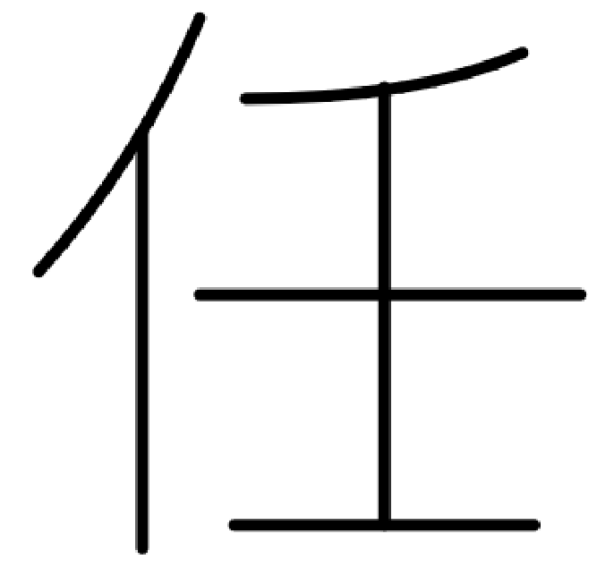
Original genome (archetype)
(score 1.0)
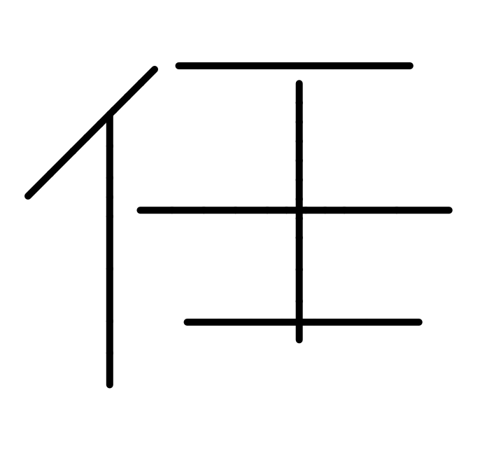
Original genome (in vector format)
(score 0.5553)
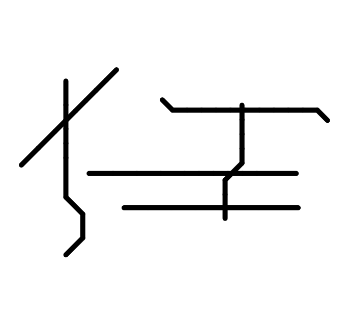
Mutated genome
(score 0.1466)
We used a dual-branch CNN,Dia. 1 (convolutionary neural net), which is known to work well with character recognition projects with a second layer, like stroke recognition, or font. Most models aren't built for a form of analysis like this, which is why dual branch CNN was our choice.
Training an AI requires a large amount of data, so to create enough data to support a healthy model, we used a three-set mutation,Dia. 2 in which we made ~12 million genomes.
After generating the genes, we trained our neural network using a Google Colab A100, and we evaluated the final model based off of genomes that it did NOT train with, to make sure that we avoided memorization.
| Original Archetype | Mutation Example | Score |
|---|---|---|
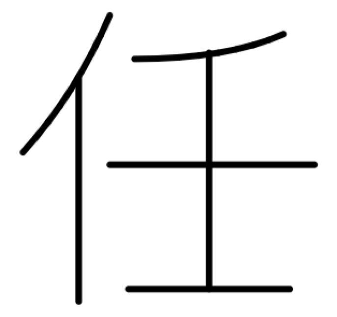 |
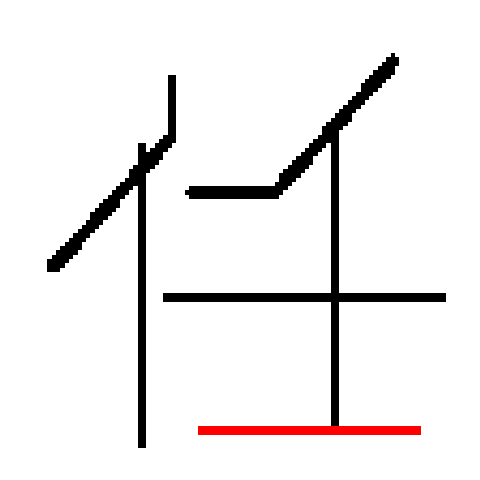 |
0.382 |
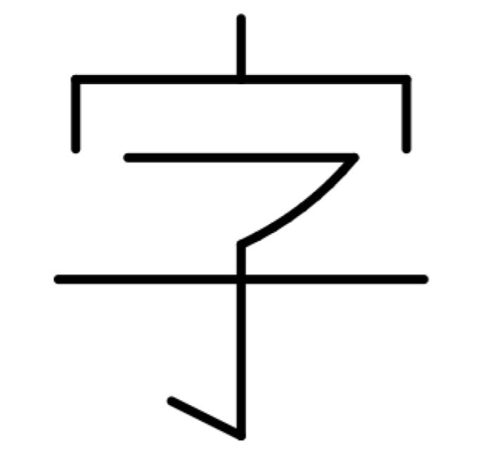 |
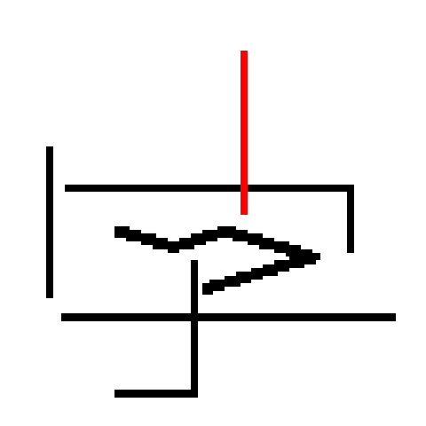 |
0.143 |
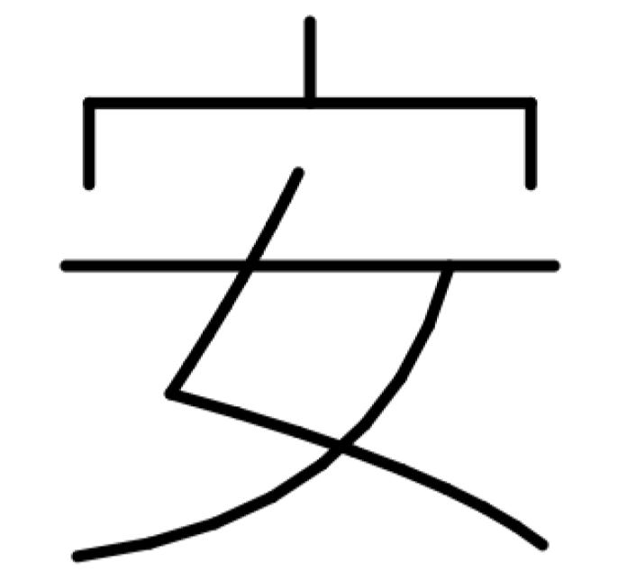 |
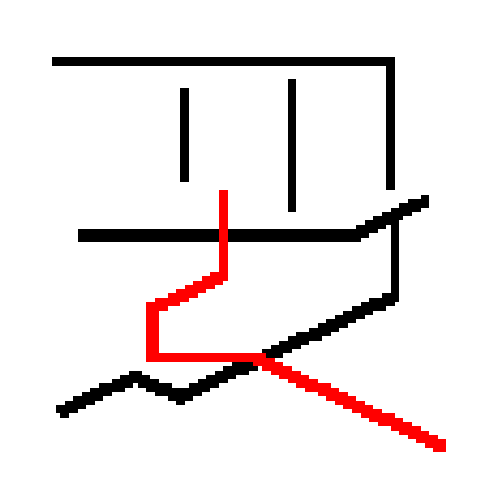 |
0.143 |
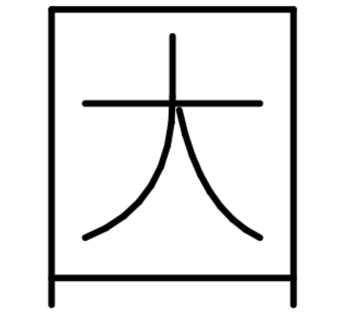 |
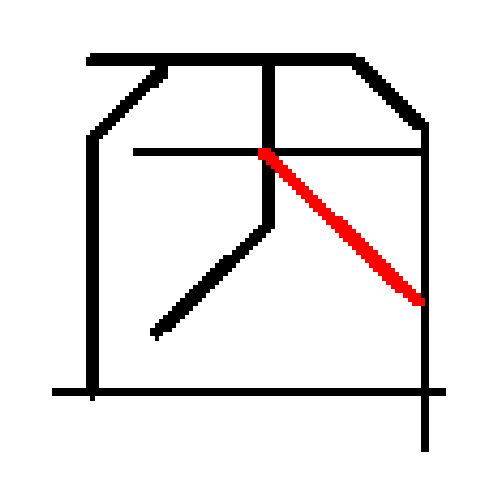 |
0.209 |
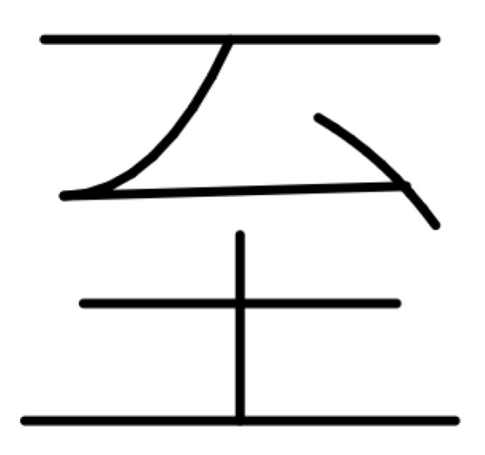 |
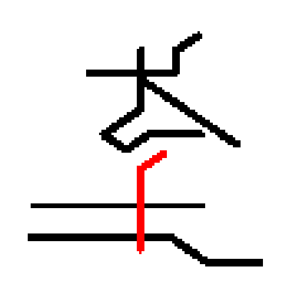 |
0.093 |
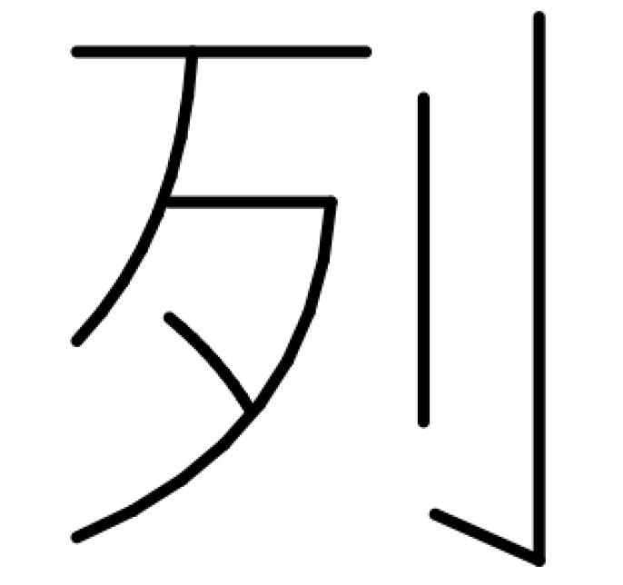 |
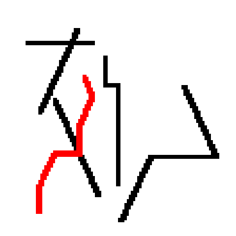 |
0.023 |
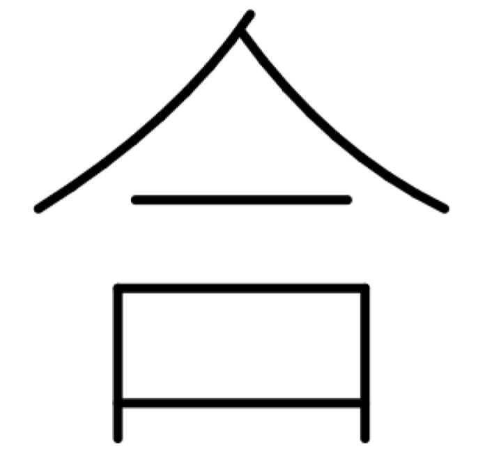 |
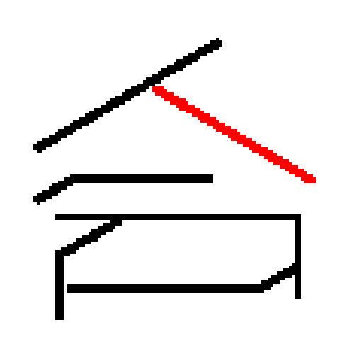 |
0.143 |
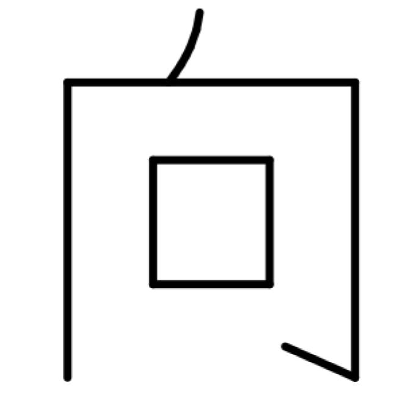 |
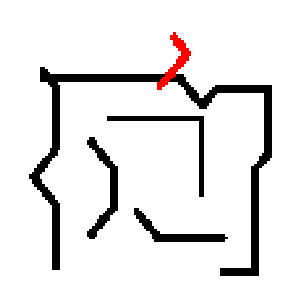 |
0.212 |
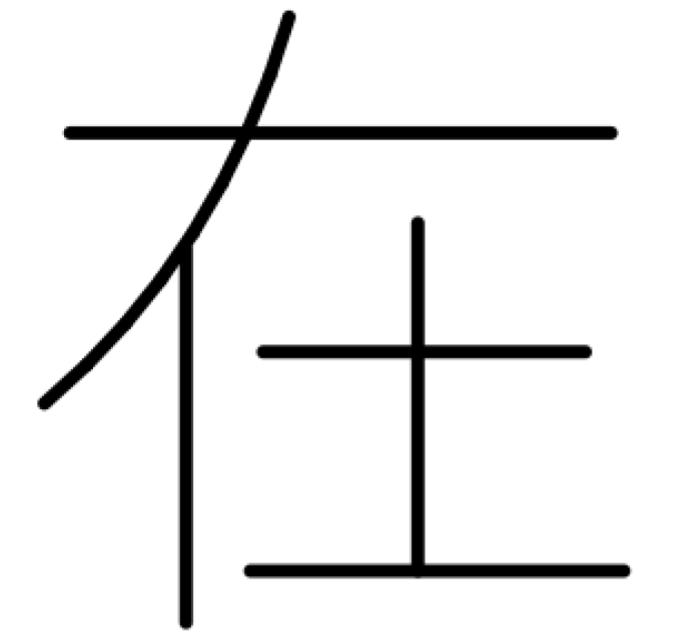 |
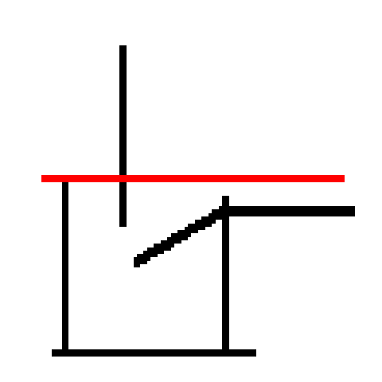 |
0.143 (model didn't recognize) |
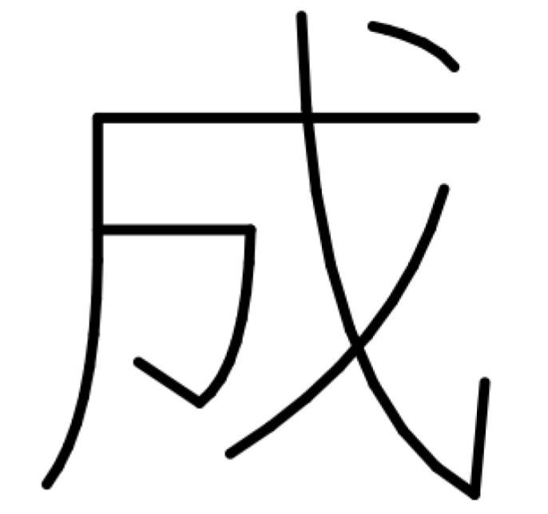 |
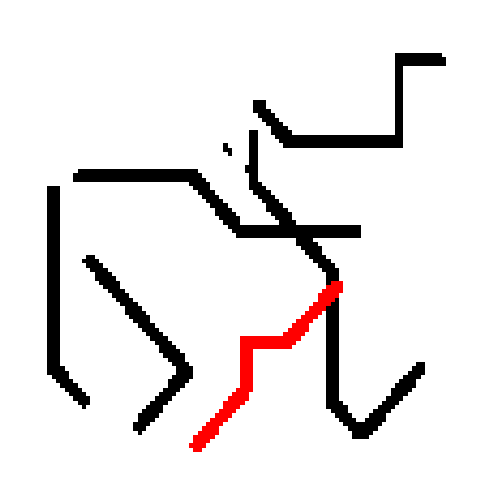 |
0.036 |
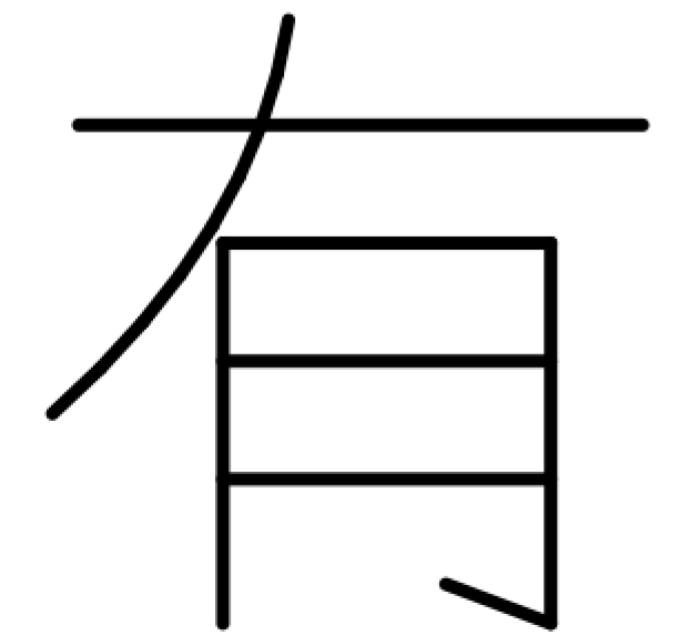 |
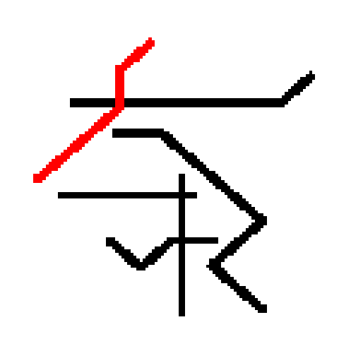 |
0.085 |
CNN Method
(Scrubs through the image with a 3x3 grid, and figures out the shape)
Training Data Creation
(First method cuts down size, second method mutates)
The final model achieved a high degree of accuracy, thanks to our 4.2 million nodes. Below are the evaluation metrics on the test dataset:
| Metric | Value |
|---|---|
| Character Accuracy | 99.75% |
| Stroke Accuracy | 95.44% |